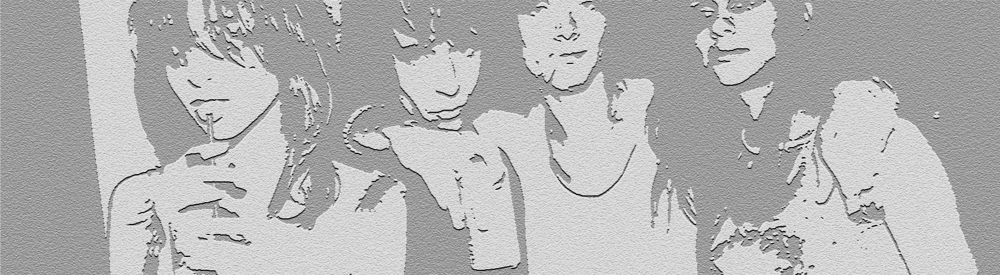

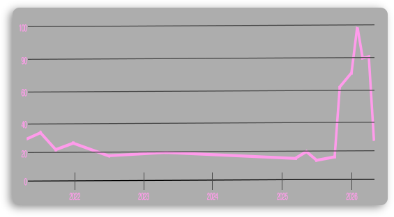
인디 슬리즈(Indie-Sleaze)의 귀환과 음악이 주는 아늑한 몰입감.
바인(Vine) 감성 유머의 전성기 부활.
칼날처럼 날렵한 실루엣, 가죽 재킷, 그리고 록 글래머로 대변되는 한 시대를 정의한 스타일.
2016년의 문화적·청각적 선구자이자 마스터피스였던 앨범의 영향력을 기리며.
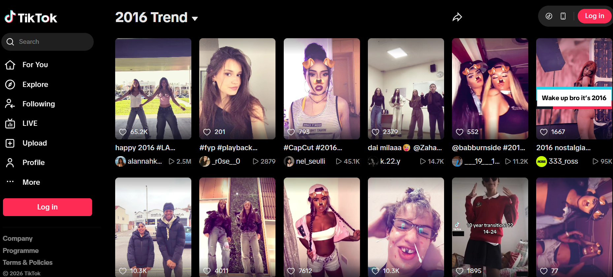
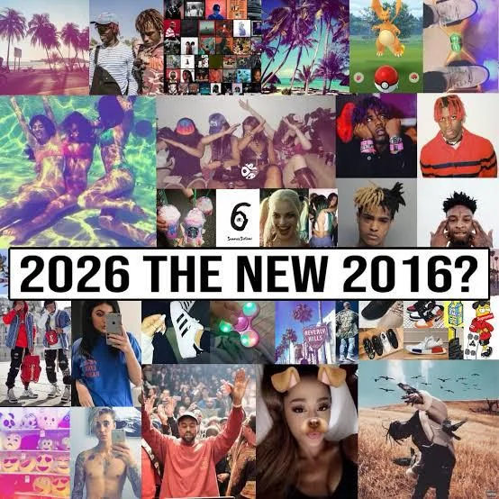
2026년의 시선에서 되돌아본 2016년은 음악과 하위문화의 황금기이자, 언더그라운드 씬의 날 것 그대로의 에너지와 인디 문화가 가장 만개했던 시절로 기억됩니다. 숏폼 알고리즘이 우리의 주의력을 지배하기 전, '포켓몬 GO'로 사람들이 거리로 쏟아져 나오던 완벽한 테크-라이프 밸런스의 시대였습니다. 팬데믹 이전의 세상이었기에, 우리는 어떠한 사회적 불안감이나 단절감 없이 붐비는 페스티벌과 공연장에 자유롭게 모여들곤 했습니다. 또한 하이패션 아카이브의 부활과 인간의 순수한 창의성이 지금의 AI 중심 환경보다 더 밝게 빛나던 최적의 문화적 접점이기도 했습니다. 결국 우리가 2016년을 돌아보는 이유는, 알고리즘의 큐레이션이 아닌 우리 자신의 열정이 이끌었던 '진정한 탐험의 마지막 시대'였기 때문입니다.
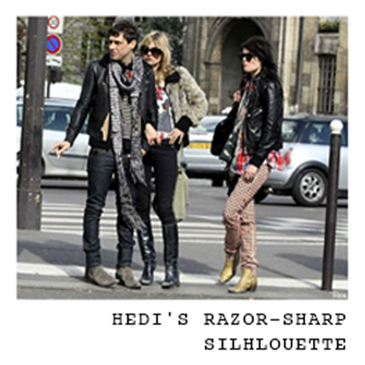
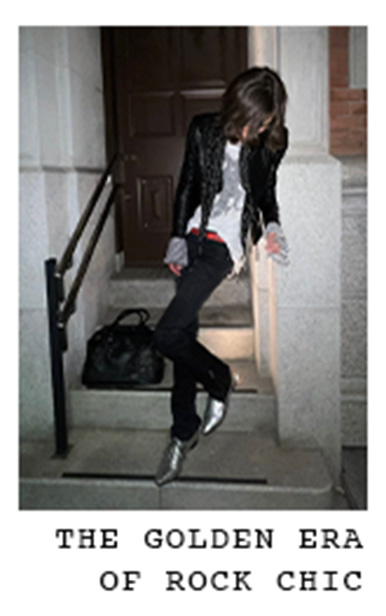
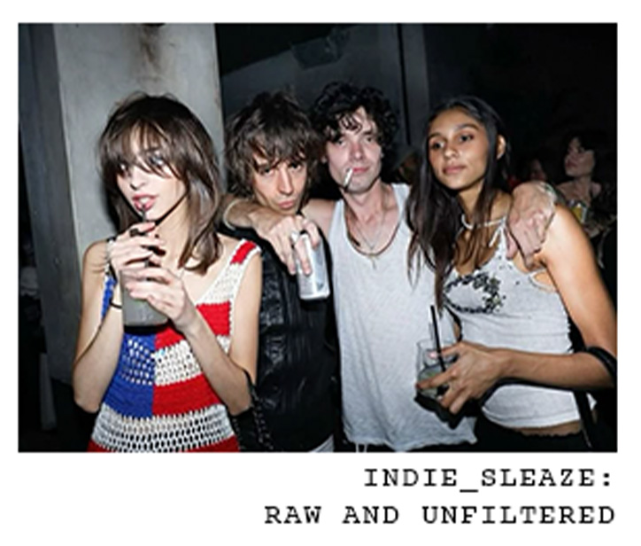
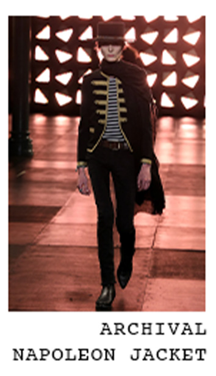
2026년을 장악한 알고리즘 기반의 규격화된 오버사이즈 트렌드에 피로감을 느낀 언더그라운드 씬은 에디 슬리먼 특유의 날렵한 록 시크 아카이브 실루엣을 다시 소환했습니다. 이는 인간 신체의 가공되지 않은 선을 되찾고, 진정한 독창성을 회복하겠다는 선언과도 같습니다.
2026년의 하이퍼 커넥티드(초연결) 라이프스타일 속에서 디지털 피로에 지친 젊은이들은 2016년의 어두운 글래머러스함에서 위안을 찾습니다. 매일 마주하는 화면 뒤에 숨겨진 차갑고 네온 빛 가득한 밤을 표현하기에 록 시크보다 완벽한 시각적 매개체는 없습니다.
AI가 큐레이팅한 완벽함과 결점 없는 디지털 픽셀이 넘쳐나는 2026년의 풍경 속에서, 사람들은 역설적으로 '망가질 수 있는 자유'를 갈망합니다. 2016년 인디 슬리즈의 로파이(Lo-Fi)하고 즉흥적인 에너지는 오늘날 하이퍼팝 씬의 미학적·정신적 중추 역할을 하며, 현대 소셜 미디어가 주는 숨 막히는 완벽주의를 산산조각 냅니다.
한때 2016년 패션 씬을 지배했던 압도적인 스테이트먼트 피스들은 이제 2026년에 이르러 아카이브 큐레이션의 '성물(Holy Grail)'이 되었습니다. 10년 전의 마스터피스를 해체하고 이를 오늘날의 서브컬처 맥락 속에서 스타일링하는 행위는, 미래지향적인 패션 감각을 보여주는 가장 완벽한 과시가 되었습니다.
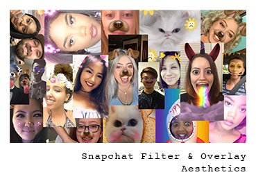
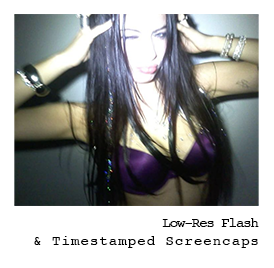
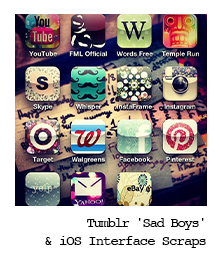
상징적인 '강아지 필터'가 적용된 사진을 활용해 2016년 특유의 스냅챗 감성을 재현합니다. 웹 네이티브 호버 애니메이션이 적용된 클래식한 반투명 블랙 텍스트 배너를 얹고, 그 위에 "mood"나 "miss me" 같은 날 것 그대로의 캡션을 더해 연출합니다.
어두운 방 안에서 강렬한 플래시를 터뜨려 찍은 거칠고 과노출된 아이폰 거울 셀카를 활용합니다. 짙은 디지털 노이즈 처리를 더하고, 그리드 카드 모퉁이에 선명한 오렌지색 타임스탬프(2016.06.08)를 각인하는 방식입니다.
2016년 당시의 iOS 음악 플레이어 스크린샷, 스냅챗 수신 확인 메시지(Opened 2m ago), 네온 핑크빛 디지털 낙서 등을 픽셀이 깨지고 글리치된 느낌으로 연출합니다. 이를 미니멀하고 고급스러운 테크니컬 그리드 레이아웃에 과감히 배치하여, 마치 암호화된 2016년의 프라이빗 금고 같은 무드를 구현합니다.